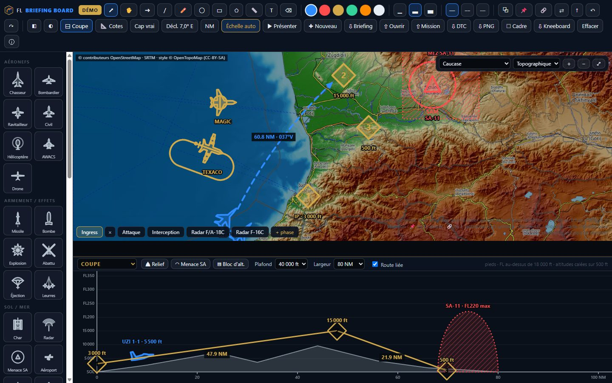
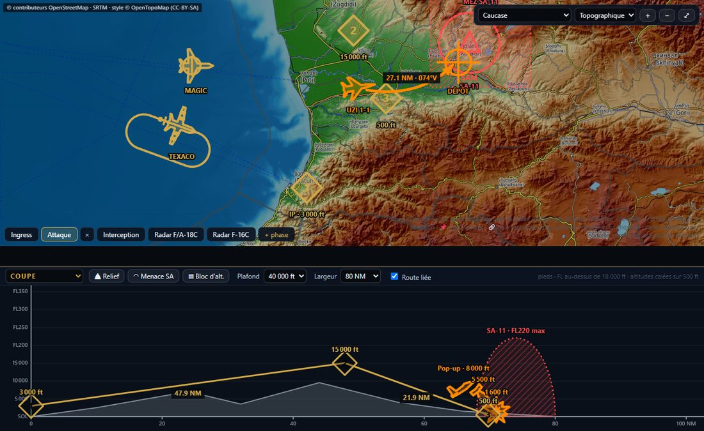
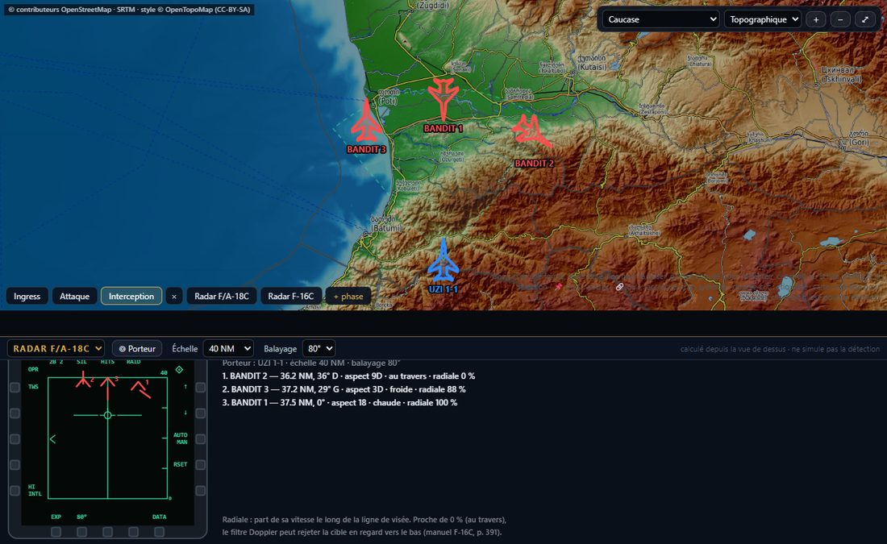
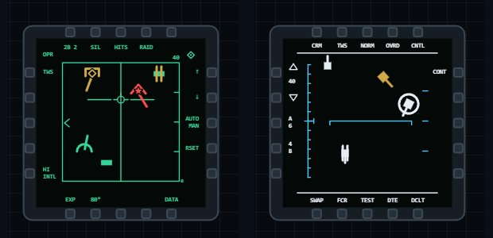

Your route's altitude, under the map
The profile follows the waypoints of the top view in number order, with terrain and surface-to-air threat ceilings. Move a point on the map and the profile follows; drag it in the profile to change its altitude.
Drop aircraft and threats on real theatre maps, link the altitude profile to your route, show your flight what their radar will see, then take it all to the kneeboard or into your F/A-18C DTC.
Free · in your browser · nothing to install · open source

The profile follows the waypoints of the top view in number order, with terrain and surface-to-air threat ceilings. Move a point on the map and the profile follows; drag it in the profile to change its altitude.

Pick a radar carrier: every aircraft on the map becomes a contact on the F/A-18C or F-16C radar page, with range, bearing, aspect and closure share. Turn the carrier or move a target and the display follows.

F/A-18C and F-16C display templates and symbols, drawn from each module's manual, to teach how to read the radar page on the same board as the manoeuvre.

Drop the .miz: your flight's route, bullseye, air defences, ships,
tankers and AWACS with their orbit, TACAN and frequency. Then send the route back
into the F/A-18C DTC.
All 14 DCS theatres in topographic, satellite or road map, with automatic scale. True or magnetic headings, with computed declination or your mission's.
Fighters, tankers, AWACS, threats, waypoints, bullseye… rotate, resize, recolour. Attach a tanker to its racetrack and it stays aligned at any zoom.
Full screen for screen sharing, animated transitions between phases, laser pointer. Then a kneeboard, a PNG image or a briefing file for the whole flight.
Your planning tool computes fuel, loadouts and cards. FL Briefing Board is for explaining: who goes where, at what altitude, where the threat comes from, and what the radar will show when it is time to shoot.
Yes. The code is open source under the MIT licence. The project is backed by LK Studio and by community supporters.
The interface is in French for now; an English interface is being prepared. The user guide is fully in English, and the board's symbols and maps speak for themselves.
No: a recent desktop browser is enough. Map backgrounds need an Internet connection.
Nowhere: the board keeps your work in your browser, and an imported mission is read on your machine. Only map tiles are loaded, from public servers (OpenTopoMap, OpenStreetMap, Esri).
“⇩ Briefing” saves a file, with its phases and images, that anyone reopens with “⇧ Ouvrir”. For the cockpit: the kneeboard or a PNG image.
The board works for any aircraft. The radar view and its kit cover the F/A-18C and F-16C; exporting the route to the DTC, the F/A-18C.